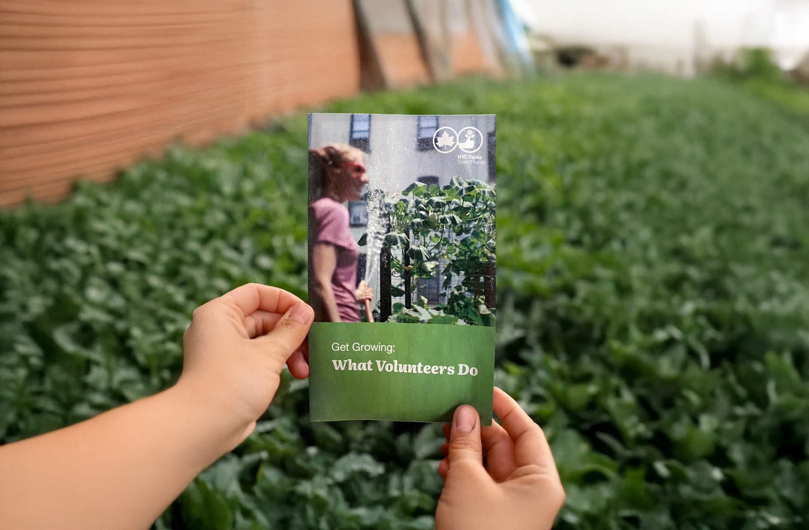
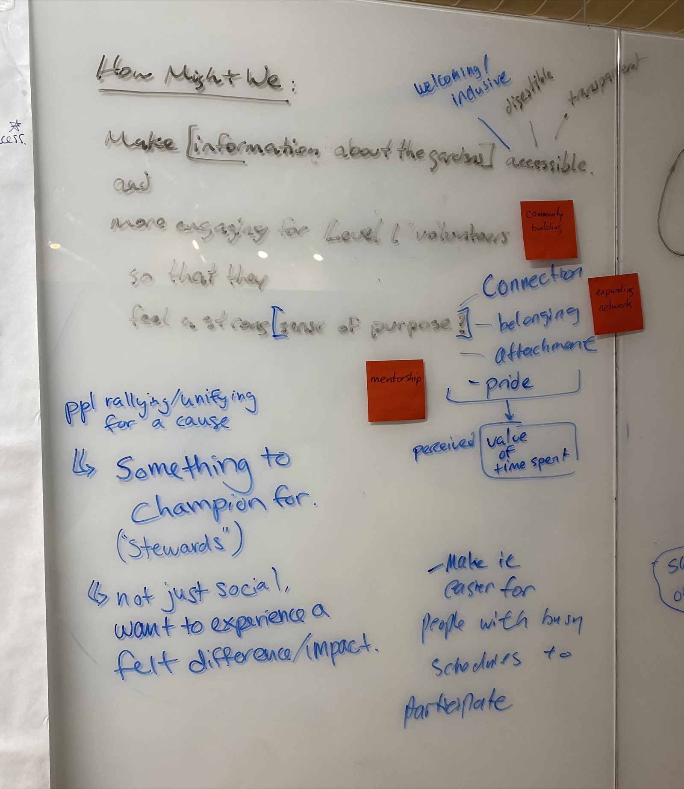
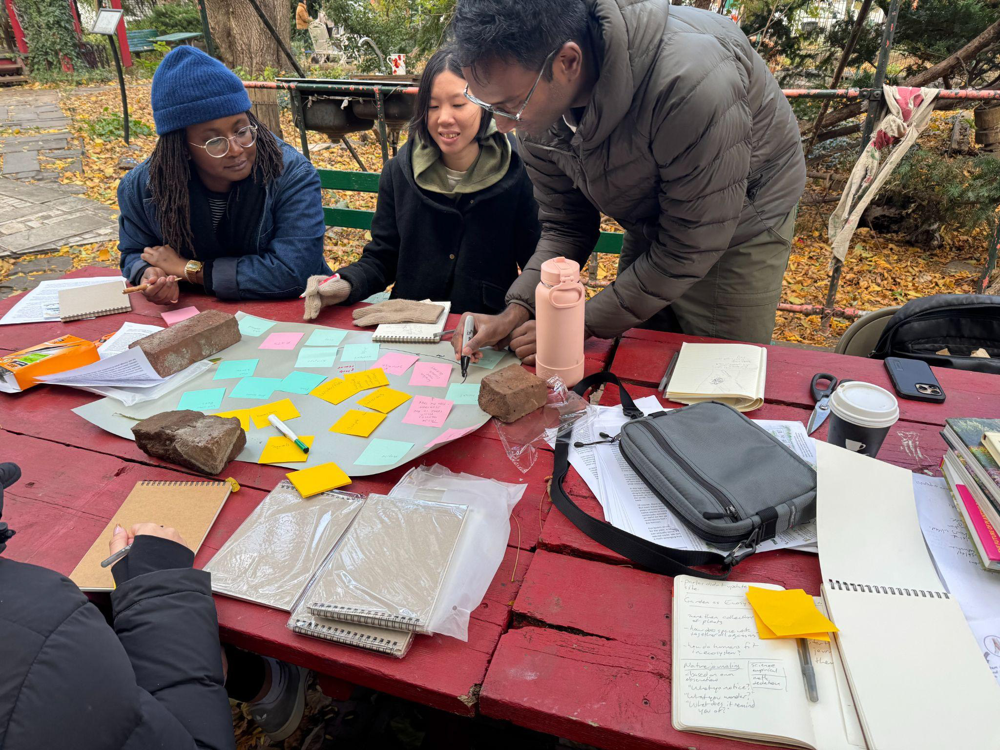
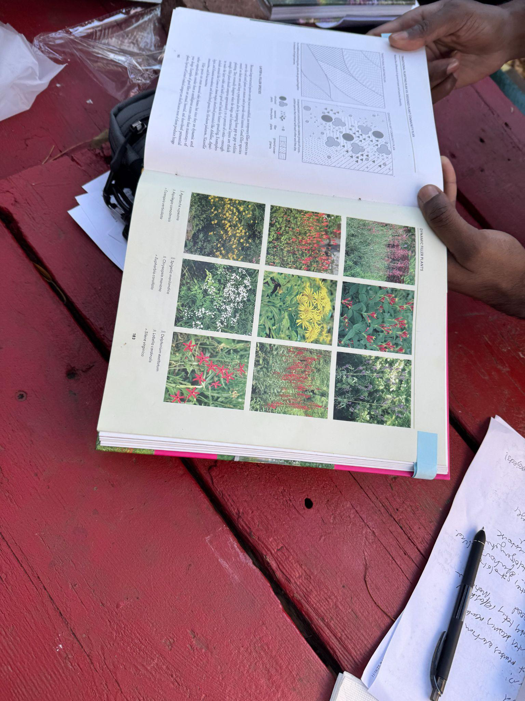
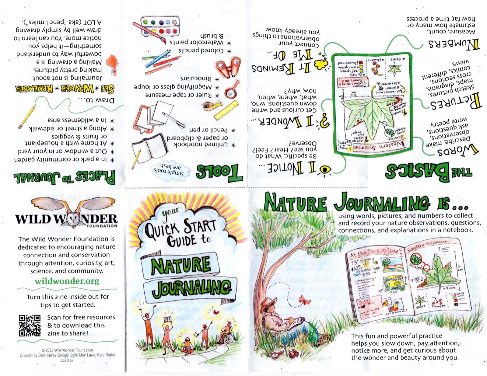
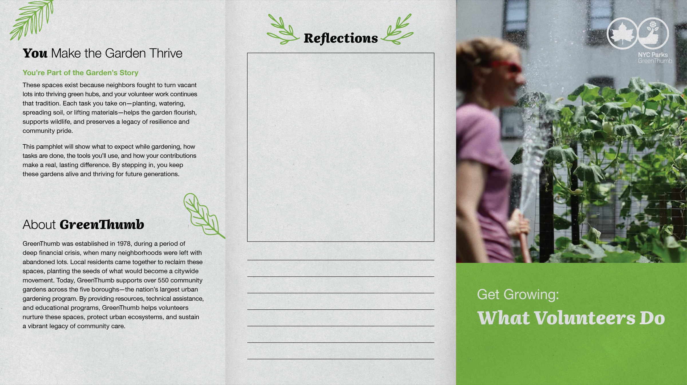

Redesigning the Volunteer Experience
Helping GreenThumb's community gardens grow their volunteer base
The Missing Onboarding Piece
GreenThumb is the largest community gardening program in the country: 550+ gardens, 20,000 volunteers, all five boroughs. But keeping that volunteer base strong is harder than it looks. Gardens are entirely volunteer-led, and when leadership burns out or new volunteers don't find a way back in, gardens are at risk of closing.
Our team of three took that on as a service design challenge. My focus was the design and production of the final deliverable, but I was in the mix for research and synthesis from the start.
"Our challenge is to keep membership strong, bring in younger generations, and help gardens stay open as older gardeners age out."— Kyleen Sanchez, GreenThumb Volunteer Program Coordinator
Getting Close to the System
We started by talking to the people actually keeping these gardens alive. Through stakeholder interviews, conversations with garden leaders, and a volunteer survey across 20 gardens, we built a pretty wide view of the experience. Then we went to Green Oasis Community Garden to feel it from the inside.
Back in the studio, we spread everything across a wall and got to work — affinity mapping, synthesizing, finding the thread. Two problems kept rising to the top, and neither was about motivation.

Burnout and fragile leadership
A small core group ends up running everything: operations, events, admin. When that group burns out or splinters, the whole garden feels it. One garden we learned about had to completely rebuild its membership after a leadership fallout. Not a people failure — a structural gap that no one had designed around.
No visible pathway forward
Volunteers had good first experiences and still didn't come back, not because they didn't care, but because no one showed them how to stay. The door was open. There just weren't any signs inside.
Two insights came out of synthesis that shaped everything after.
Insight 1
Every garden has a story to tell
Most volunteers assume the garden has always been there — like the city built it. But these aren't generic green spaces. Each one was fought for by the neighborhood it's in. It's not about conservation. It's about preservation — keeping alive what a community created.
When volunteers understand that story, they're more invested in its future.
Insight 2
Early Skill Pathways Grow Roots
Repeat volunteers show interest by returning, but gardens struggle to develop their skill sets due to unclear entry points. Volunteers need to see how they can connect — and they need tools to become resourceful on their own, without depending on a garden member.
Together, they reframed the problem. Volunteers didn't just need a clearer path forward. They needed a reason to care about the place they were stepping into.
Field Observation
We attended a nature journaling and ecosystem mapping workshop at Green Oasis as first-time participants, not researchers. We left feeling genuinely connected to the space, especially after hearing the garden's origin story from a longtime member. But when we arrived, it wasn't immediately clear where the workshop was even taking place.
That small friction stuck with us. The garden had something real to offer — the entry point just wasn't legible. It pointed to exactly where design could live: not in overhauling how gardens operate, but in smoothing the path from first visit to ongoing investment.



From Whiteboard to Newsprint
With our insights mapped, I moved into design asking: what's the lightest-weight thing that could actually change the volunteer experience on day one?
The answer was a pamphlet. Something a garden leader could hand a new volunteer before a workday — something that told the story, set expectations, and left a door open to coming back. The cover opens with "You Make the Garden Thrive," framing new volunteers as part of a living legacy rather than a seasonal work crew. Inside, it covers what to expect, the tools they'll use, and how their work connects to the garden's larger mission. The back half includes space for reflection and skill tracking, because people tend to stay connected to things they've put a little of themselves into.
Using hand drawn illustrations wasn't just an aesthetic call — it felt right for a project rooted in community care and handmade spaces. For production, we chose newsprint: lightweight, affordable, compostable, and honestly just a good fit for a program built on doing more with less.


What This Makes Possible
Before this project, GreenThumb had a sense of the retention problem but no designed artifact to address the onboarding gap directly. What we surfaced through research, and translated into something garden leaders could actually use, gave language to a problem that had been felt but not clearly named across the network.
The pamphlet is print-ready and built to scale. Any of the 550+ gardens can adapt it to their own story without losing the core structure — which matters a lot when every garden runs independently. The solution had to work with that autonomy, not flatten it.
Next steps would be testing with real volunteers and garden leaders, and seeing whether the pamphlet could stretch beyond onboarding into something more — a tool for advocacy, helping volunteers become champions for their gardens long after the first workday.
What I Took Away
Getting close changes what you see
The retention problem looked like a motivation problem from the outside. Up close, it was a clarity problem and a story problem. That shift only happened because we did the research, sat with the synthesis, and stayed curious long enough to find the real question.
Constraints are a design brief
No budget, no central staff, 550 independent gardens, volunteers who might only show up once. Those weren't obstacles. They were the parameters that pointed us toward something simple enough to actually work.
The material is part of the message
Choosing newsprint wasn't just practical. In a project about community care and preservation, it felt important that the object itself reflected those values.